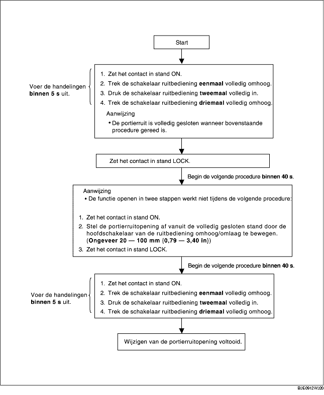

PROCEDURE WIJZIGEN PORTIERRUITOPENING
B3E091266350W03
-
Aanwijzing
-
• Controleer na het uitvoeren van de onderstaande procedure of de functie openen in twee stappen normaal werkt en de portierruitopening gewijzigd is. Als de functie openen in twee stappen niet werkt en de portierruitopening niet gewijzigd is, is de procedure niet juist uitgevoerd. Herhaal de procedure vanaf het begin.
